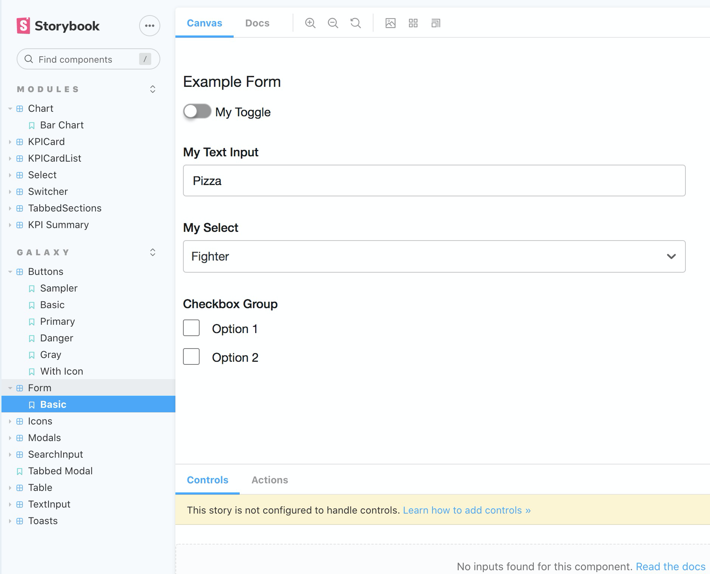

Lead Designer and Design System Advocate throughout the organization. I initiated the creation of Galaxy and was the Sr Designer on the project.
The AnswerRocket web application has been designed by Developers for about six years until a design team was formed about a year ago. There were many releases in that time and the UI was never consistent. There wasn't any specific pattern library or system in place for developers to follow.
Bring consistency to the application's UI with a shared language around design. Have a dedicated space for devs to copy code. Give PM's the design patterns for idea generation mockups and wireframes.
In the first few weeks of working at AnswerRocket I was tasked with doing a UX Audit on the product. I identified areas that could be improved by following best UI/UX patterns. At this time I had started to see alot of inconsistency in buttons, forms, modals, etc.
I quietly started documenting some of this in Milanote and a project plan was born, see below:
The UI had many inconsistencies that was taking away from a great user experience. Here are just a few examples from the audit:
At this time I talked to a few developers to see if this is something we could get done as a team, and approached our Head of Product with a presentation of the advantages of a Design System. Having this inconsistent UI and UX was costing the organization lots of time and development resources.
The stars aligned and AnswerRocket was chosen to be on the big stage at the Gartner Trade Show in 2021 with the largest competitors in the industry: Microsoft BI, Tableau & Qlik. All these organizations were given Covid Data to show off their application in the "Bake Off". This was the catalyst for updating the current UI with the consistency that came from a Design System, and Galaxy was born. We started with typography, colors, buttons & forms.
While working on the components and patterns I used Web Aim to design with accessibility in mind. Accessibility is not something that is talked about at AnswerRocket, so this was my chance to create a more accessible product.
I put together a presentation that included our audit of the current UI, along with best practices and benefits of a Design System and presented to the CTO, CEO and Head of Product. I also found a champion for Galaxy on the Dev team, Mark who has a few front Devs working under him and loved the idea. They were using Bootstrap in the past and found it so much easier to manage the Front End.
Our approach was to design a few screens with best UI/UX practices and port the elements back to Galaxy. This was our version 1.0 of the Design System and wasn't ideal, but it was the best process for us at the time. We only had about 3 weeks including development to get the UI in a good place for this Gartner Bake Off.
For example, I began with an updated UI version of our NewsFeed that included new icons and a redesigned top level navigation. Our icon system at time spanned three different libraries with alot of inconsistencies. After some research I landed on Streamline icons. There was an easy way to implement Streamline on the front end with an NPM Package, so development was thrilled.
Although we had approval from the CEO from the beginning, he started to challenge some of the early decisions that were faily established, such as colors. We had a few conversations, but had to shelve the talks to push towards finishing this Gartner project.
I worked closely with one of our Front End Leads, Mark to make sure that everything that being developed was utilizing Galaxy. Our PM, Stef was also monitoring the QA of this work, lending a hand to make sure that everything was consistent, and tracking all of this in Jira. They used a product called Storybook to keep the entire dev team in sync. They create the React components and Mark led the adoption of Galaxy throughout the Dev team.
When we started QA, we noticed that a few of the developers were not using Galaxy. We quickly setup meetings with Mark and those developers to make sure that all the work was being implemented properly using our new Design System.
The new UI was well recieved in the Gartner demonstration. The NewsFeed was especially impactful when the Covid Data judge labeled it "one of the most impressive aspects of the Gartner Bake Off".
The next phases we are working on include more documentation, as well as usability testing on various patterns that were implemented in the Gartner UI refresh. I'm currently working on defining our Design Principals as an organization. I'm also working with our Head of Product to get into more talks with the CEO reguarding concerns he may have with various patterns so that we will all be aligned.